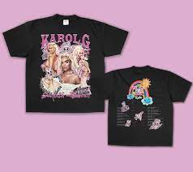

singer karol.g
History of karol.g
Carolina Giraldo Navarro (born 14 February 1991).
known professionally as Karol G.
she is a Colombian reggaeton singer and songwriter.
karol.g song
album logo
karol.g latest album 2023-2024

karol.g merch

press here to access link
karol g latest song